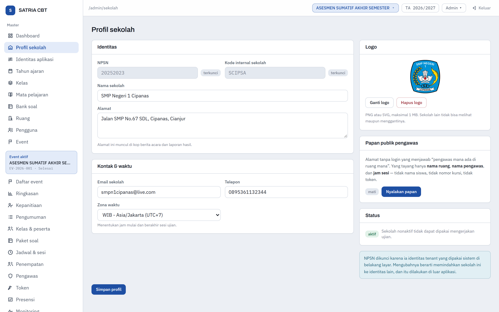
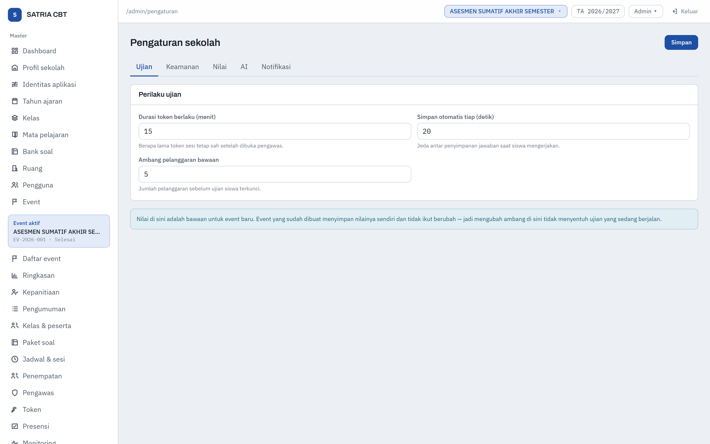

2. Menyiapkan sekolah
Dikerjakan sekali di awal. Empat laman, dan hanya satu di antaranya yang memengaruhi jalannya ujian.
Bab ini bukan tentang mengisi kolom. Yang perlu Anda pahami adalah mana yang mengikat: satu salah isi di sini bisa membuat jam sesi ujian meleset beberapa jam tanpa pesan galat apa pun.
Profil sekolah

Zona waktu — satu-satunya isian yang benar-benar berbahaya
Aplikasi ini menyimpan jadwal sebagai jam dinding sekolah. Zona waktu menentukan jam berapa “07.00” itu sebenarnya. Bila salah, tidak ada galat: aplikasi tetap berjalan, sesi tetap terbuka, hanya saja terbuka beberapa jam lebih awal atau lebih lambat dari yang Anda maksud.
Tiga pilihan yang tersedia:
- WIB — Asia/Jakarta (UTC+7)
- WITA — Asia/Makassar (UTC+8)
- WIT — Asia/Jayapura (UTC+9)
NPSN dan kode sekolah terkunci
Kedua kolom bertanda terkunci. NPSN dipakai untuk mengenali sekolah Anda di antara banyak sekolah lain, dan kode internal dipakai aplikasi. Bila salah, hubungi pemasang aplikasi — bukan diubah sendiri.
Logo
Logo muncul di kop berita acara, laporan hasil, dan kartu peserta. Unggahannya lewat tombol Ganti logo tersendiri, bukan menyatu dengan tombol Simpan profil — supaya menyimpan perubahan alamat tidak ikut mengunggah ulang berkas.
Papan publik pengawas
Saklar di bagian ini menyalakan alamat publik /papan/<slug>: satu halaman tanpa login yang menampilkan sesi yang sedang berjalan. Halaman itu dibuka pengawas di HP, atau ditempel di layar ruang guru.
Identitas aplikasi

Bagian ini tidak memengaruhi ujian sama sekali. Isinya yang dibaca peramban: judul tab, ikon, dan warna bilah atas di HP.
- Nama situs — tampil di judul tab dan pratinjau tautan saat dibagikan.
- Nama pendek — maksimal 12 karakter. Android memotongnya di tengah kata bila lebih panjang.
- Deskripsi — meta description, dibaca mesin pencari dan WhatsApp saat tautan dibagikan.
- Ikon — tiga jenis: favicon (tab), ikon (layar beranda), dan apple (iOS).
Pengaturan sekolah

Lima tab: Ujian, Keamanan, Nilai, AI, dan Notifikasi.
Tiga kolom pada tab Ujian yang perlu dipahami:
- Durasi token berlaku — berapa lama token sesi tetap sah setelah dibuka pengawas. Terlalu pendek: pengawas harus membacakan ulang di tengah ujian. Terlalu panjang: token yang bocor tetap berlaku sepanjang hari.
- Simpan otomatis tiap — jeda antar penyimpanan jawaban. Menaikkannya mengurangi beban server tetapi memperbesar jawaban yang hilang bila perangkat siswa mati.
- Ambang pelanggaran bawaan — jumlah pelanggaran sebelum ujian siswa terkunci.